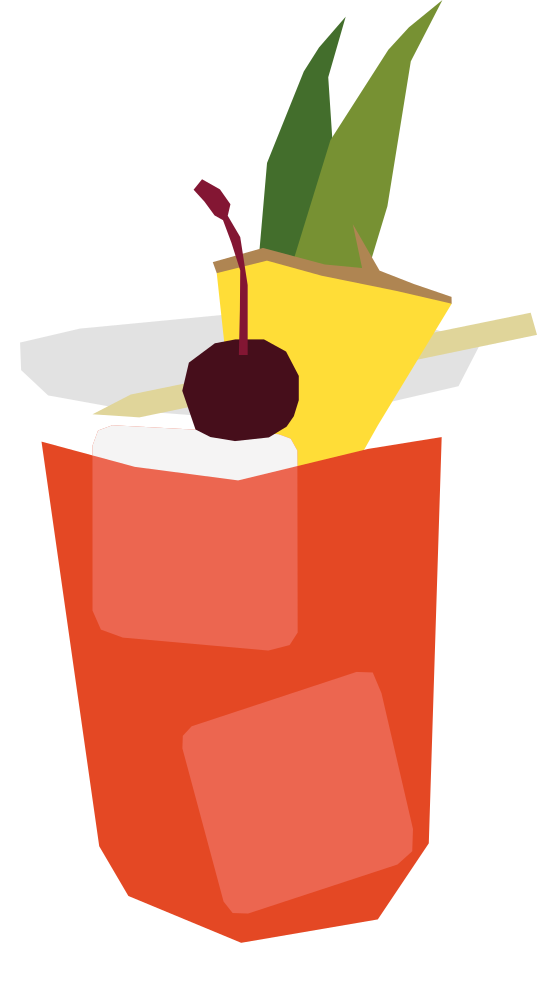

¿Qué opinas de la coctelería temática?
Creado en 1978 en el Aviary Bar, ubicado en el hotel Hilton de Kuala Lumpur, ambientado con un tema de pájaros y jungla. Estuvo prácticamente olvidado durante décadas hasta que fue rescatado por el movimiento de coctelería tiki en los años 2000.
RECETA
- 45 ml ron oscuro
- 15 ml Campari
- 45 ml jugo de piña
- 15 ml jugo de lima
- 15 ml jarabe de azúcar
- Un gajo de piña
- Una cereza
- Agrega todos los ingredientes a una coctelera con hielo.
- Agita bien hasta enfriar.
- Cuela y sirve sobre hielo.
- Decora con un gajo de piña y una cereza
Vaso: Vaso bajo o tiki